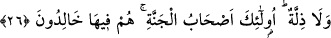

Sonra rükûya intikal, kişinin melekût âleminden ceberût âlemine geçişine işârettir.
Sonra secdeye intikal, kişinin ceberût âleminden geçip lâhût âlemine ulaşmasına
işârettir. Bu âlem, küllî fenâ makamıdır. Bu esnâda kişinin aslî ve ulvî vatanına
yükselişi hâsıl olur. Demek ki bu intikaller tenezzül; yani aşağı inme sûretinde
yükseliştir.
Ardından secdeden kalkmak bakâ hâline işârettir. Çünkü bakâ, bir geriye dönüştür.
Bunda yükselme sûretinde bir tenezzül (aşağı inme) söz konusudur. Rükû, “kâbe
kavseyn” (bk. en-Necm, 53/9) makâmıdır. Bu makam sıfatlar, yâni zât-ı vâhidiyye
makamıdır. Secde ise “ev ednâ” (bk. en-Necm, 53/9) makamıdır. Bu da zât-ı ahadiyyet
makamıdır.
Bu açıklamadan et-Te’vîlâtü’n-Necmiyye’deki bir kere ilimden varlığa, bir kere de
varlıktan ilme çağırmak sûretiyle meydana gelen yükseliş ve alçalışın; yani suûd ve
hübûtun ne olduğunu anladın.
Şu halde sâlik, urûc ve nüzûl engellerini aşmadıkça nâkıstır ve bütün bu engelleri
aşanlara göre henüz berzahtadır. Yani orta bir yerdedir. Bu engeller, mertebelerdeki
tafsilâtına göre cisimlerin, ruhların, ilim ve aynın taayyünleridir, tezâhürleridir. Meselâ
“O’na ancak tam temizlenenler dokunabilir.” (el-Vâkıa, 56/79) âyeti üzerinde
düşünürseniz zâtî hüviyyete sadece cismânî veya rûhânî taayyün alâkasının kirinden
temizlenenlerin değebileceğine/ulaşabileceğine işâret olduğunu görürsünüz. Bu konuda
yardımcı olacak olan Allah’tır.
et-Te’vîlâtü’n-Necmiyye’de şöyle denilir: “ve dilediğini doğru bir yola iletir.”
Allah Teâlâ yarattıklarını ilimden fiile, varlıktan da yokluk ve ilme dâvet buyurunca,
hidâyeti ilme, yâni özellikle doğru yolu dilemeye bağladı. Yâni, Allah Teâlâ kâmil
cezbesi ile, özel olarak da ezelî meşîeti ile onları kadîm ilmine hidâyet eder, iletir. Bu
makam Allah ile Allah’ta seyr (Seyr fillah billah) makamıdır. et-Te’vîlâtü’n-
Necmiyye’nin sözü burada bitti.
26. Güzel amel işleyenlere, daha güzel karşılık ve fazlası var. Onların yüzlerine
ne bir kara bulaşır, ne de horluk. İşte onlar, cennet ehlidirler. Orada ebedî
kalacaklardır.
“Güzel amel işleyenlere” yani amellerini gerektiği şekilde yapanlara… Gerektiği
şekil ise amellerin zâtî açıdan güzel olmalarını gerektiren vasfî güzellikleridir. Hz.
Peygamber (s.a.) bunu şöyle tefsir etmiştir: “Allah Teâlâ’ya O’nu görüyormuşsun gibi
kulluk etmendir. Sen onu görmüyorsan da O, seni görür.”[49]